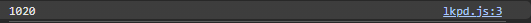
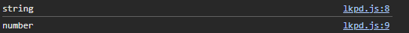
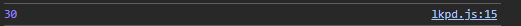
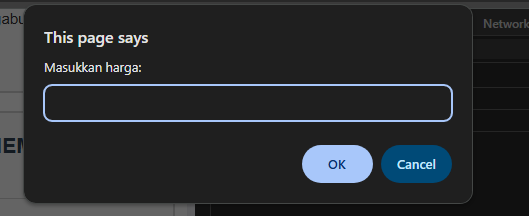
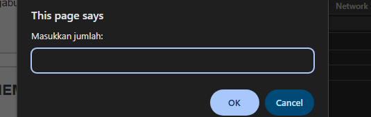
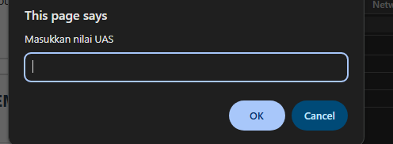
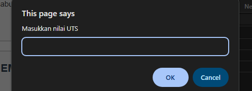
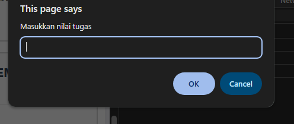

LEMBAR KERJA PESERTA DIDIK (LKPD)
JavaScript — String, Number, dan Konversi Data
Satuan Pendidikan: SMKN 1 GARUT
Mata Pelajaran: Dasar-Dasar Pengembangan Perangkat Lunak dan Gim
Kelas/Fase: X / Fase E
Alokasi Waktu: 2 × 45 menit
A. TUJUAN PEMBELAJARAN
Setelah menyelesaikan LKPD ini, peserta didik mampu membedakan String dan Number, menjelaskan bahwa prompt() menghasilkan String, menggunakan Number() dan String(), menganalisis kesalahan akibat tipe data, serta membuat program input dan perhitungan sederhana.
B. PETUNJUK KERJA
- Kerjakan mandiri terlebih dahulu.
- Prediksi hasil sebelum menjalankan kode.
- Jalankan kode dan amati.
- Diskusikan melalui Think Pair Share.
- Simpan file sebagai
lkpd_string_number_nama.js.
C. AKTIVITAS 1 — EKSPERIMEN 10 + 20
Jangan jalankan terlebih dahulu. Prediksikan hasil:
let a = "10";
let b = "20";
console.log(a + b);| Pertanyaan | Jawaban |
|---|---|
| Apa output program? | "1020" |
| Mengapa hasil tersebut terjadi? | Karena a dan b adalah String, operator + menggabungkan teks. |
| Apakah a dan b bertipe Number? | Tidak, keduanya bertipe String. |

Uji sekarang. Apakah prediksimu benar? Jelaskan.
Ya. Outputnya adalah 1020 karena kedua nilai berupa String, sehingga operator + menggabungkan teks, bukan menjumlahkannya.
D. AKTIVITAS 2 — MENEMUKAN TIPE DATA
Jalankan:
let nama = "Asep";
let umur = 16;
console.log(typeof nama);
console.log(typeof umur);| Variabel | Prediksi | Hasil typeof | Kesimpulan |
|---|---|---|---|
| nama | String | string | Berisi teks. |
| umur | Number | number | Berisi angka. |

Temuan: String digunakan untuk menyimpan teks, sedangkan Number digunakan untuk menyimpan angka yang dapat dihitung.
E. AKTIVITAS 3 — KONVERSI STRING MENJADI NUMBER
Perbaiki program agar menghasilkan 30. Gunakan Number():
let a = "10";
let b = "20";
let hasil = Number(a) + Number(b);
console.log(hasil);Hasil program: 30

F. AKTIVITAS 4 — PROGRAM KASIR SEDERHANA
Program meminta harga dan jumlah barang, mengonversi input menjadi Number, lalu menghitung total.
let harga = Number(prompt("Masukkan harga: "));
let jumlah = Number(prompt("Masukkan jumlah: "));
let total = harga * jumlah;
console.log("Total belanja = " + total);| Input uji | Nilai |
|---|---|
| Harga | Rp10.000 |
| Jumlah | 3 |
| Total seharusnya | Rp30.000 |
| Total program | Rp30.000 |


G. TANTANGAN — PROGRAM HITUNG NILAI
Algoritma saya:
- Memasukkan nilai tugas, UTS, dan UAS menggunakan prompt().
- Mengubah semua input menjadi Number menggunakan Number().
- Menjumlahkan ketiga nilai tersebut.
- Membagi hasil penjumlahan dengan 3 untuk mendapatkan rata-rata.
Program JavaScript:
let tugas = Number(prompt("Masukkan nilai tugas: "));
let uts = Number(prompt("Masukkan nilai UTS: "));
let uas = Number(prompt("Masukkan nilai UAS: "));
let rataRata = (tugas + uts + uas) / 3;
console.log("Nilai rata-rata = " + rataRata);


Gambar bukti hasil uji program. Contoh nilai: tugas , UTS, dan UAS .H. THINK — PAIR — SHARE
| Pertanyaan | Jawaban |
|---|---|
| Mengapa prompt() perlu dikonversi jika hasilnya ingin dihitung? | Karena prompt() menghasilkan String, sehingga harus diubah menjadi Number agar bisa dihitung secara matematika. |
| Apa perbedaan "10" dengan 10? | "10" merupakan String (teks), sedangkan 10 merupakan Number (angka). |
| Apa yang terjadi jika lupa Number()? | Angka akan dianggap sebagai teks sehingga operasi penjumlahan bisa menggabungkan teks, bukan menjumlahkan angka. |
Pair: Bandingkan jawaban dengan teman. Apakah sama? Mengapa bisa berbeda?
Jawaban saya hampir sama dengan teman karena kami memahami materi yang sama, tetapi mungkin berbeda dalam cara menjelaskan.
Share: Sampaikan satu temuan penting kepada kelas.
Prompt() menghasilkan String sehingga perlu dikonversi menggunakan Number() jika ingin melakukan perhitungan.
I. REFLEKSI 3–2–1
3 hal yang saya pahami:
- String digunakan untuk menyimpan teks.
- Number digunakan untuk menyimpan angka.
- Number() digunakan untuk mengubah String menjadi Number.
2 hal yang masih membingungkan:
- mengatasi prompt atau kode yang tidakber jalan.
- Kesalahan yang terjadi akibat tipe data yang tidak sesuai.
1 hal yang ingin saya coba pada program berikutnya:
Saya ingin mencoba membuat program kalkulator sederhana menggunakan JavaScript.
J. PENILAIAN DIRI
| Pernyataan | Jawaban |
|---|---|
| Saya dapat membedakan String dan Number. | Ya |
| Saya memahami prompt() menghasilkan String. | Ya |
| Saya dapat menggunakan Number(). | Ya |
| Saya dapat menggunakan String(). | Ya |
| Saya dapat menemukan kesalahan tipe data. | Ya |
| Saya dapat membuat program input dan hitung sederhana. | Ya |
Bagian K (Rubrik Penilaian Praktik) dan Catatan Guru diisi oleh guru.